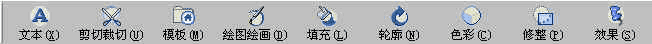
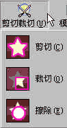

|
|
| 当前位置：电脑报电子版 > 1999 年 > 46 期 > OA专刊 > 聚焦Microsoft PhotoDraw 2000 |
| 《 聚焦Microsoft PhotoDraw 2000 》 |
| Microsoft PhotoDraw 2000是Microsoft Office 2000集成软件中的新成员。在以前的Office版本中，当需要用到图像处理时，一般用户通常使用照片编辑器或者Windows附件中的“画图”程序，功能非常有限，而且很不方便。PhotoDraw的出现弥补了Office应用程序缺少专业图像处理软件的缺憾。
一、PhotoDraw 2000功能简介 PhotoDraw功能强大、操作简单、适应性强的特点主要表现在以下方面：1图像润色、照片编辑、着色、绘图、三维效果 可以自动修正红眼，清除划痕和污点以及清除斑点、修正图像和颜色。例如调整色彩、亮度、对比度及色调和饱和度。在熟悉的界面下，用户可以轻松自如地组合编辑照片，进行各种剪贴画、油画处理等，在线条绘制、文本处理及三维效果方面也毫不逊色。2自定义剪贴画、商业模板和目录 300多个专业设计的商业模板，使用户能获得美观的自定义图形，包括20000幅照片、背景和剪贴画以及完整的Microsoft剪辑库。用特殊效果自定义标准剪贴画可以创建独一无二的自定义图形。3支持多种图像类型 支持标准的图形文件格式，用户能够灵活地导入22种不同格式的文件，例如BMP、JPG、GIF、PCD、CDR等，也可以导出14种不同格式的文件。4智能化的工具和预览、打印功能 即使没有任何设计或操作图形经验的用户，智能化的图像修正工具也能保证创建出具有专业外观的图形。可视化菜单可以在应用特殊效果前进行预览和尝试。智能打印功能可以自动调整照片或图形尺寸，使之适应多种不同页面尺寸，包括流行的Avery商业标签和票据。5为Web创建小型的照片或图形功能 PhotoDraw自动将图像转换成Web调色板，并且提供不同质量图像的预览以及相应的下载时间，用户可以从中为Web站点选择最佳方案。 6对数码相机和扫描仪的先进支持> 通过数码相机和扫描仪捕获图像，并将它们传送到PC机中的过程简单易行，而且是自动化的。例如，单击鼠标就可以自动扫描并修正图像。7交互式帮助指南 交互式帮助指南能够提供帮助和快捷方式，可以提高用户的技能。可视化菜单可以帮助用户发现新的功能。当用户需要使用这些功能时，不需要知道或记住技术名词。8Office产品的兼容性及智能保存功能 所有的Office产品都有相似的界面、工具和一些特征，例如工具栏和操作向导。向导将询问一些关于用户计划如何使用图形的问题，然后根据需要选择最高质量和最小的文件大小以及格式。二、利用PhotoDraw的可视菜单处理图像 进入PhotoDraw后可以发现，其界面与其他Office产品基本相同，除了传统的菜单、工具栏外，PhotoDraw针对影像与图形的编辑，设计了一行非常直观的可视菜单栏(图1)，用户不用记忆一堆生硬的专用名词，只要打开菜单栏，就可以一目了然，单击相应的图标按钮，即可开始图形的编辑。这些具体而形象的图标按钮极大地方便了用户的操作,可以说，只要会使用这些工具按钮菜单，就等于学会了PhotoDraw。1利用文字工具制作文字特效 PhotoDraw可以在很短的时间内，制作出十分专业的文字变化。除了在文字上使用丰富的图形特效外，以往需要专业软件制作出的三维效果，现在只需几秒钟就可以完成。单击可视菜单中的“文本”图标按钮，单击“插入文本”命令，输入文字内容后文字四周会出现八个控制点，可以自由地调整文本大小；通过拖动文本框上面的绿色控制点，还可以让文字自由旋转。在窗口右边“文字控制窗口”中通过对上部对话框的效果选择，下部则会出现相应的各种特殊效果，如弧形、立体、三维等。 2利用剪切工具剪裁对象  在PhotoDraw中提供了灵活的剪裁方法，它是针对处理对象局部区域进行的操作，单击“剪切裁切”工具按钮(图2)，可以选择不同的剪裁方式。剪切：可剪切对象中的区域。剪切对象时，实际上是在建立所选区域的副本。然后，可将副本插入到另一图片或保存为单独的文件。PhotoDraw提供了四种方法剪切对象，即按预设形状选择区域并剪切、通过手动绘画方式选择区域并剪切、用“边缘确定器”选择区域并剪切、通过指定色彩选择区域并剪切。 裁切：裁掉该区域周围不需要的或分散的元素。裁切后的对象大小恰好可以容纳裁切对象所选的形状，而形状以外的区域将作为透明处理。 擦除：擦除对象中的某一区域，该区域变成透明，可调整透明度以产生更加不同的效果。 3利用模板选择工具制作美术作品 PhotoDraw提供了许多专业设计的模板和图库，不管是制作广告传单、企业文件、演示文稿、幻灯片，还是Web网页，PhotoDraw丰富的模板与图库都可以满足用户的需要。用户只要针对个人的需要，选择适当的模板和图库，就可以立即设计出具有专业水准的图形。在可视菜单的“模板”工具中，提供了五类模板和图库，依次是Web图片、商用图片、卡片、设计框线、美工图形，利用这些丰富的模板和图库可以轻松地设计出各种美观的图形。用模板设计图形时，就像用向导一样，通过单击“下一步”按钮，逐步完成设计工作，直观方便。 4利用画笔工具绘图绘画 如果想根据自己的兴趣爱好进行绘画，使图片更具个性化，可以使用可视菜单中的“绘图绘画”来实现。单击可视菜单中的“绘图绘画”工具，再单击“绘图”命令，将显示“自选图形”工具栏和“轮廓”工作窗口。这样就可以像在Word中绘图一样画图了。5利用填充工具增强效果 填充对象是增强对象效果的常用手段，可以使用色彩、纹理、过渡或图片填充对象。单击可视菜单中的“填充”按钮，在下拉菜单中选择合适的填充工具。如果要使对象具有单纯的色彩，可以使用“纯色”填充对象。对于文本对象，用纯色填充即相当于设置了文字颜色；对于绘图对象，使用纯色填充一般仅填充自选图形内部，还需要将线条或轮廓颜色设置为与填充相同的颜色，以达到边框与内部颜色一致的目的。若想使对象看起来像砂石、地毯、木材或其他材料制成，则可以使用纹理填充对象。“设计师过渡”是指PhotoDraw中内置的大量双色或多色过渡，也称渐变效果。使用“双色过渡”填充对象，可以使对象具有双色渐变的效果，诸多工具，相信一定能满足你不同的需求。6利用线条绘制工具为图像添加各式轮廓 PhotoDraw除了能制作出了美观的图形特效外，还提供了丰富的边框制作命令。通过可视菜单中的“轮廓”工具可以给图片加上漂亮的镜框。打开要处理的图片后，从“轮廓”工具菜单中选择所需的轮廓命令。单击“柔和边缘”命令，设置不同的柔和度。若单击“普通”命令，选择一种合适的线条和颜色，即为图片设置了线条样式的框线。单击“艺术笔刷”和“照片笔刷”命令，可以设置艺术性框线和图片式框线。 7利用色彩调节工具调整图像效果 在可视菜单“色彩”中，可以对影像设置不同的亮度、对比度、饱和度等。单击“亮度和对比度”命令，在“色彩”对话框工作窗口中，单击“校正选中对象”列表项，拖动“亮度”和“对比度”滑杆，或直接在其后的数值框中输入数值，可以分别调整亮度和对比度。通过调整图片或其他对象的亮度和对比度，可以使光线较暗淡的图片对象变得明亮，或使模糊的图片对象变得较为清晰。利用“轻微着色”可以去除图片中少量其他颜色。例如，在室内不用闪光灯拍照时，照片中的人物表面可能会染上一点红色或其他颜色，用“轻微着色”可以有效地进行修正。8利用图像修整工具修理图片 扫描照片或从数字相机中下载照片后，照片上往往存在某些缺陷，例如照片不够清晰、人物眼睛有红斑、有灰尘或划痕等。利用可视菜单中的“修整”工具，可以修改影像的局部区域。9利用特效与滤镜简化设计 一个好的作品一般需要采用特效效果来衬托。PhotoDraw内建200种特效，可以直接应用于图片、文字、影像绘制的图形上。当采用这些特效后，可立即看到效果，如果不满意可退回重新调整。在“效果”工具菜单中，可以对文字、图形和图像设置阴影、透明度、扭曲、三维等效果。从上面的介绍中可以看出，PhotoDraw 2000简明易学、功能强大。同时她对系统硬件的要求比较低，奔腾90或以上的多媒体电脑，32MB内存，190MB可用的硬盘空间，CD－ROM驱动器，16/24位真彩色。运行在Windows 95/98、Windows NT 4.0或更高版本系统中。 怎么样？想装上试试？ |
| 下载本期推荐软件 | 页 首 |
| 《电脑报》版权所有，电脑报网站编辑部设计制作发布 |